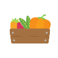

Classement nourriture
Classement Nourriture est un site entièrement gratuit où vous pouvez trouver les meilleurs articles pour votre santé.
Un site en qui vous pouvez faire confiance sur ses 3 points :
Gratuit : Classement nourriture est un site gratuit qui ne vous demandera d'effectuer aucun paiment et qui ne collecte pas vos informations bancaires.
Santé : Classement nourriture s'appuie sur les sources disponibles dans le site du Ministère de la Santé pour établir le "podium".
Non sponsorisé : Classement nourriture n'est en aucun cas payer par d'autres entreprises pour mettre leurs produits en haut de nos pages.